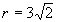
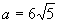
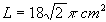
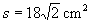

Se uma das faces de um cubo está inscrita numa circunferência de raio

cm, é verdade:
CLIQUE SOBRE O NÚMERO PARA VER A SOLUÇÃO
(01) O volume do cubo é V = 216 cm3.
(02) A área total do cubo é S = 144 cm2.
(04) A área do círculo inscrito em uma face do cubo é A = 9p cm2
(08) O apótema da pirâmide de altura igual à aresta do cubo e de base igual a uma das faces desse cubo é

cm.(16) A área do cilindro de base circunscrita a uma base do cubo e de altura igual a uma aresta desse cubo é

.(32) A área do triângulo retângulo em que um cateto é igual à diagonal de uma das faces do cubo e o outro cateto é igual a uma aresta desse cubo é

 Voltar à Lista de Questões
Voltar à Lista de Questões